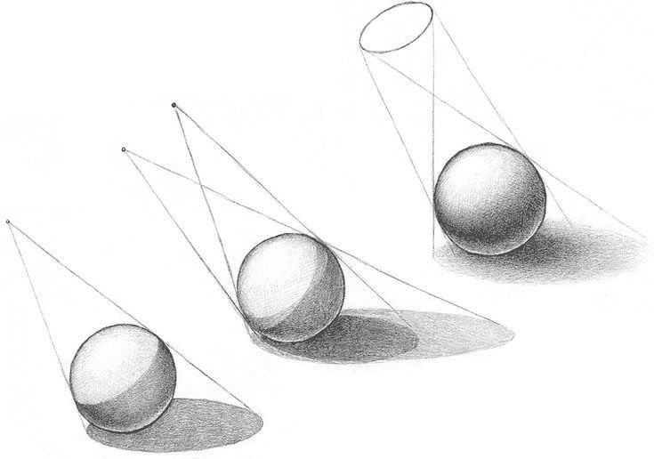

Шар
Построение формы шара
Цель урока
Понять, как из окружности построить объемную форму шара: наметить общий силуэт, уточнить конструкцию, определить источник света и передать объем тоном.
01
Общий силуэт

02
Уточнение формы

03
Падающая тень

04
Тональная проработка

Светотень на шаре

Следи за направлением света, формой собственной тени и мягкостью переходов. На шаре особенно заметно, как тон помогает плоскому контуру стать объемной формой.
Практика
- Наметь шар легкими линиями без сильного нажима.
- Определи источник света и форму падающей тени.
- Набирай тон постепенно: от общего пятна к мягким переходам.